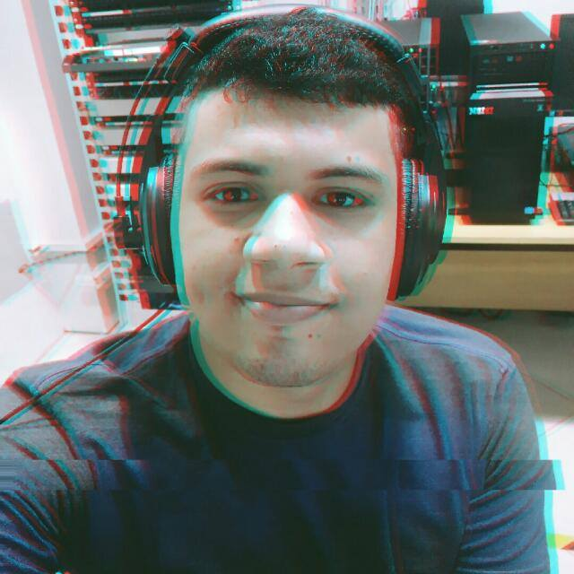

Biografia do Lucas!
Nome: Lucas Tavares Batista

Sexo: Masculino
E-mail: lucaslira757@gmail.com
Profissão: Estudante
Estado Civil: Casado
Biografia
Apaixonado pela vida sempre busco ser uma pessoa melhor a cada dia
natural de Porto Nacional busquei dar continuidade aos meus estudos
na capital Palmas, filho de Ezilene Batista e Carlos Augusto, pais simples
mas que sempre me incentivaram a trilhar o caminho dos estudos.
Apaixonado pelo mundo da Tecnologia da Informação(TI) desde novo
busquei fazer o curso de Ciências da computação na universidade CEULP ULBRA
onde hoje me encontro no 6º periodo.
Cidade: Porto Nacional
Estado: Tocantins
Informações Acadêmicas
Informações Profissionais
Empresa: SESI
Cargo: Estagiario em suporte e manutenção de TI